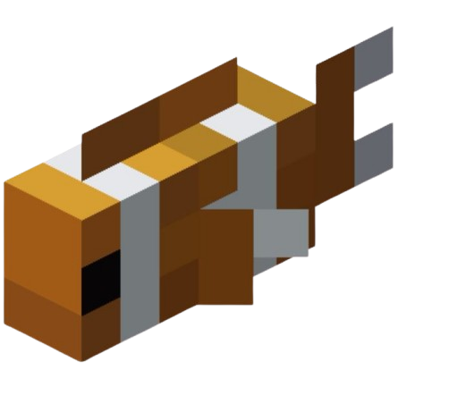
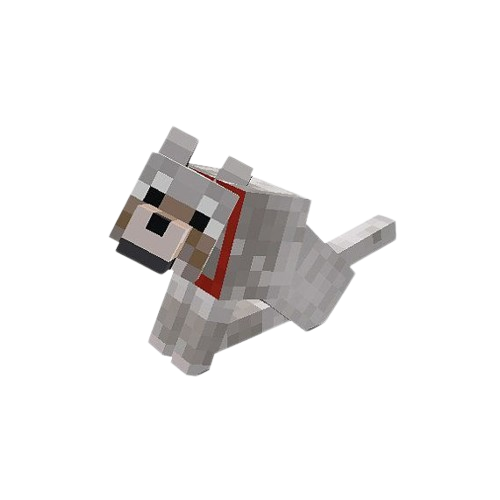
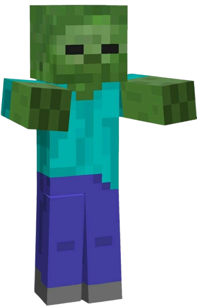
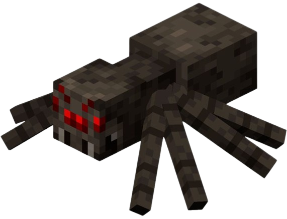
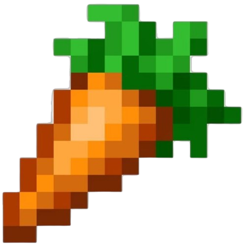
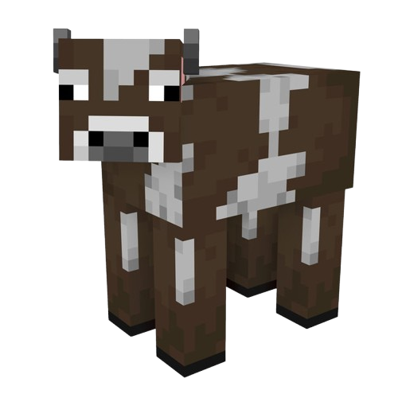
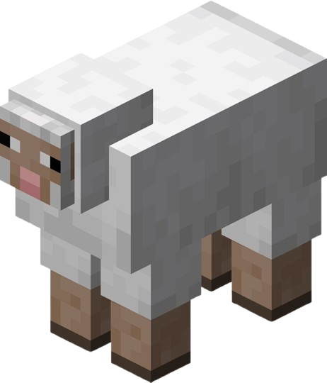
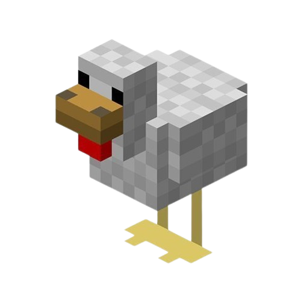
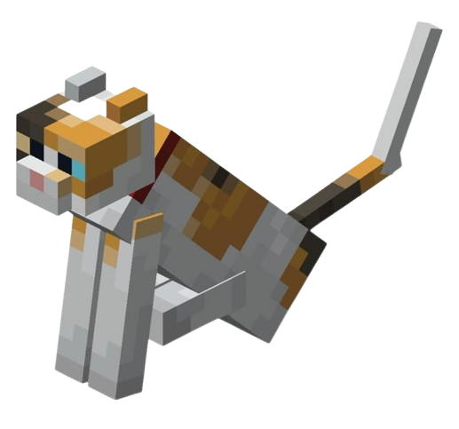

What Were the Animals Doing at 8 O'clock?
Yesterday evening at 8 o'clock, a magical moonlight flash lit up Steve and Alex's farm! When Steve walked outside with his lantern, all the animals were busy: the pig was eating a carrot, the fish was swimming in the river, and a zombie was hiding near the cave! Become an Animal Ranger and report what was happening!

RANGER CHECKLIST:
Tap all 10 Animal cards below! Flip each card to see the Ukrainian translation and earn +2 Diamonds!

WHEN DO WE USE PAST CONTINUOUS?
We use Past Continuous for actions that were IN PROGRESS at a specific time in the past!
An action happening right at a specific hour yesterday.

Describing what was going on all evening or all day.
Time markers that signal Past Continuous:
HOW TO BUILD SENTENCES (+ / - / ?)
Remember the golden rule: 1 Hero (I/He/She/It) ➔ WAS | 2+ Heroes (You/We/They) ➔ WERE + Verb-ing!

Examples:

Examples:

Examples:

3 EASY -ING SPELLING TIPS
Look how verbs change when we add -ing! Click any card to listen.
play ➔ playing
eat ➔ eating
jump ➔ jumping
hide ➔ hiding
ride ➔ riding
dance ➔ dancing
run ➔ running
swim ➔ swimming
sit ➔ sitting
Game 1: Affirmative Patrol (+)
Choose was / were + Verb-ing or build the sentence!
Loading task...

PATROL ROUND COMPLETE!
Game 5: WAS or WERE? River Bridge
Pick the right wooden plank (was / were / wasn't / weren't) so Steve crosses the river safely! A wrong plank breaks and Steve splashes in!

Loading bridge challenge...
RIVER CROSSED SAFELY!
You guided Steve across all 10 planks!
RANGER'S MAGIC PHOTO ALBUM
Spend Diamonds to develop all 8 magical photos from last night! Tap any unlocked photo to hear its Past Continuous story!

RANGER TROPHY CHEST (8 BADGES)
Collect ALL 8 badges to unlock the Warden's Official Animal Ranger License!
PAST CONTINUOUS ANIMAL RANGER
This official license is proudly awarded to:
For mastering the Past Continuous Tense (was / were + Verb-ing in +, -, and ?), crossing the Moonlight River Bridge safely, and patrolling all 10 Animals & Creatures!




RANGER SEAL